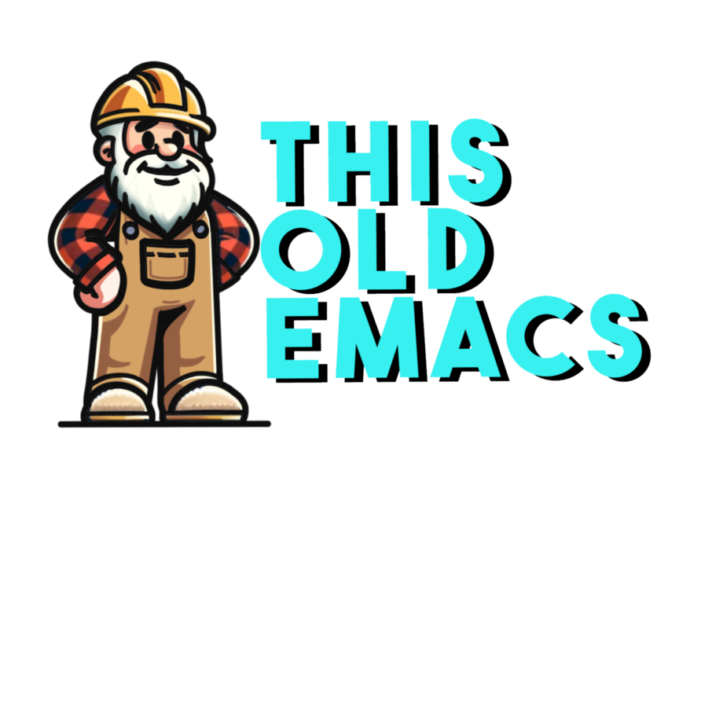

This Old Emacs

What this is all about
gnu emacs is really what it is all about. i use it all day, every day. from time to time i make a tweak that i'd like to share. thats why this is here.
my packages
such as they are, they work for me. you might find them of use.
-
sane modules is an emacs lisp package designed to efficiently manage and load custom emacs modules. it allows users to maintain a structured and clean emacs environment by organizing modules into a specified directory and loading them as needed.
-
vc-git-plus is an emacs package designed to streamline the git workflow for emacs users. it offers a suite of tools to manage git repositories, making version control operations more integrated and accessible within the emacs environment.
-
this emacs lisp package provides a convenient and automated way to generate the boilerplate code for new emacs lisp packages. it creates a standard directory structure, initializes a git repository, and sets up basic files like readme, license, and the .el file for the package.
more…
| 2024 | ||
| scratch.nvim | scratch.nvim for GNU Emacs | |
| harpoon for emacs | harpoon is cool, but I like my doodad | |
| perfect browser | I love eww | |
| sane modules | like doom, but not helps organize your init | |
| Insert dates | Dates, but not dates: more about key bindings | |
| Rebinding a key | A little hack I use from time to time | |
| My little config | Just a little blurb about my config update: | |
| My init | Based on Sanemacs but with lots of changes | |
| todo | my agenda for this site | |
| notes | quick notes that might end up somewhere | |
| journal | junk with no home | |
| gists | gist.github.com/lesliesrussell | |
| github | github.com/lesliesrussell |